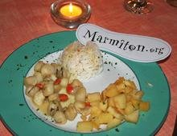

Saint-Jacques au miel, curry et pomme
Ingredients
2×
- 1 pomme golden ou gala
- 20 g de beurre
- 4 c. à s. de crème fraîche
- 2 pointes de couteau de curry
- 1 c. à s. de miel
- sel
- poivre
- 12 noix de Saint-Jacques

Préparation
Étape 1
Éplucher 1 pomme golden ou gala et la couper en petits cubes. Les cuire dans une poêle chaude avec 20 g de beurre, en ajoutant un peu d’eau si besoin, jusqu’à ce qu’ils soient tendres. Réserver.
Étape 2
Dans la même poêle, mettre 4 c. à s. de crème fraîche, 2 pointes de couteau de curry, 1 c. à s. de miel, un peu de sel et de poivre. Chauffer très doucement.
Étape 3
Ajouter 12 noix de Saint-Jacques et cuire très doucement 3 à 4min. Servir avec les pommes.